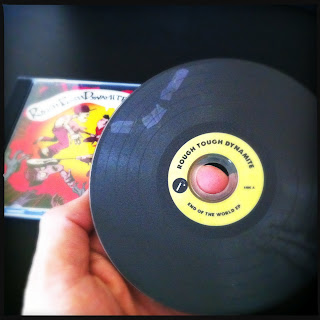

Recovered weblog entry
Lost art

It's a rare thing for me to open a CD. So when I do, it's special. Complimenting this occasion is multiple other factors; that this CD is a result of my friend's toil is the biggest of all. Add the fact that this has to be the most legit looking CD, and you have one happy listener.
Lens: Loftus
Film: DC